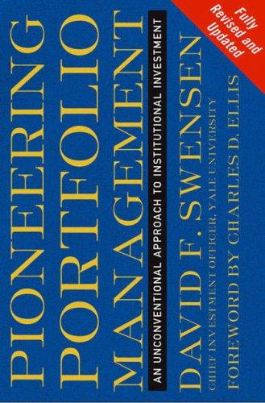

大卫·斯文森（David F. Swensen，1954—2021）于1985年以三十一岁之龄出任耶鲁大学捐赠基金首席投资官，此前他在华尔街的雷曼兄弟和所罗门兄弟有过短暂经历，但真正令他留名史册的，是他此后三十六年在耶鲁所创造的无与伦比的投资记录——年化回报率约为16.1%，将耶鲁的捐赠基金从10亿美元扩大至超过400亿美元，是美国有史以来为单一大学贡献资产最多的投资人。《机构投资的创新之路》首版于2000年，修订版于2009年出版，是斯文森将其方法论系统化为文字的核心著作。
本书的核心贡献是"耶鲁模式"（Yale Model）的完整阐述。斯文森的方法论与其同代人的主流做法存在根本性的偏离：他大幅削减了传统机构投资组合中固定收益资产的比重，转而将相当比例的资金配置于所谓"另类资产"——私募股权、风险投资、绝对回报策略、实物资产（林地、石油、房地产）。他认为，流动性本身是有成本的，能够承受较长锁定期的机构投资者，理应从流动性溢价中获得补偿；而大多数机构出于对流动性的过度偏好，实际上放弃了这一长期结构性优势。书中对资产类别配置的讨论、对主动管理与被动管理的辩证分析、对投资顾问选择标准的严苛阐述，构成了机构投资管理领域迄今最为严密的框架之一。
斯文森在书中对大多数主动管理型基金经理的批评毫不客气。他以数据证明，在绝大多数流动性较强的资产类别中，主动管理者的费后收益长期不敌低成本指数基金；但在流动性较低的私募领域，管理人之间的分散程度极大，顶尖管理人与中位管理人的回报差距可达数十个百分点——因此，机构在流动性资产上应拥抱被动，在非流动性资产上应集中于顶级管理人。这一判断在实践层面对全球机构投资格局产生了深远影响。
斯文森在耶鲁同时教授本科经济学和研究生金融课程，他将知识传授视为与投资同等重要的使命。本书的写作风格清晰、论据扎实，是机构投资领域难得的兼具学术严谨与实践深度的经典文本。对于管理大型资金池的机构投资者、捐赠基金受托人、以及希望深入理解资产配置原理的研究者和从业者而言，这本书几乎是无可回避的必读参考。